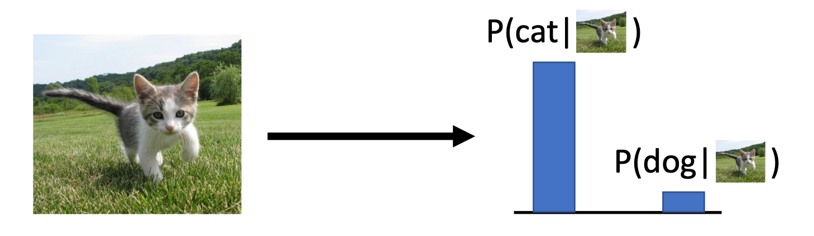
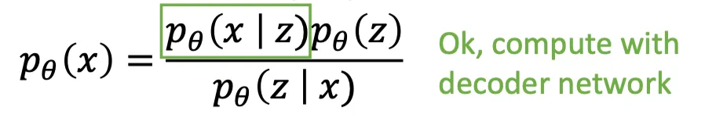
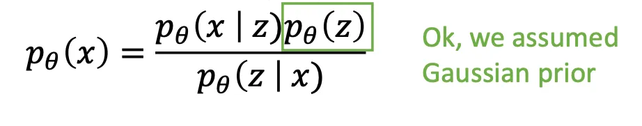

Generative Models
Learning Generative Models
Models Overview
- Discriminative Model: Learn a probability distribution p(y|x)

- Generative Model: Learn a probability distribution p(x)

- Conditional Generative Model: Learn p(x|y)


- Discriminative Model: Learn a probability distribution p(y|x)
{kind=link}
- We want to learn a probability distribution over training samples such that
- Generation: If we sample , should look like a real image that from training samples
- Density estimation: should be high if looks like a real image that from training samples, and low otherwise (anomaly detection)
- Unsupervised representation learning: We should be able to learn what these images have in common, e.g., ears, tail, etc. (features). Learn some underlying hidden structure of the data, for downstream tasks.
Taxonomy of Generative Models

Subjectives
A good generative model will create a diverse set of outputs that resemble the training data without being exact copies.
Autoregressive Models - Explicit Density
Subparts
- Probability of the next subpart given all the previous subparts: Language model, Image generation
- A order autoregressive model is a feedforward model which predicts the
next variable
in a time series based on the k previous variables
- As in RNNs, parameters are shared across time (same function at each )
- Autoregressive models make a strong conditional independence assumption
Different inputs and outputs
- is dependent on and independent of
Compare with RNNs
- Recurrent models summarize past information through their hidden state h
- In contrast to auto-regressive models, RNNs have infinite memory
- Autoregressive models are easier to train (no backprop through time)
Multi-Layer Autoregressive Models

- They effectively perform multiple causal temporal convolutions
- They can be combined with residual connections and dilated convolutions
Classic Autoregressive Models
- PixelRNN
- PixelCNN: masked convolutions - due to conditional independence
Pros and Cons
- Pros
- Can explicitly compute likelihood p(x)
- Explicit likelihood of training data gives good evaluation metric
- Good samples
- Cons
- Sequential generation => slow
Practical
- autoregressive models work on images by modeling the likelihood of a pixel given all previous ones.
- we need height-times-width forward passes through the model
- in autoregressive models, we cannot interpolate between two images because of the lack of a latent representation.
Variational Autoencoders
Latent Variable Models
- LVMs map between observation space and latent space
- One latent variable gets associated with each data point in the training set
- The latent vectors are smaller than the observations → compression
- Models are linear or non-linear, deterministic or stochastic, with/without encoder
- A little taxonomy
Deterministic Probabilistic Linear Principle Component Analysis Probabilistic PCA Non-Linear w/ Encoder Autoencoder Variational Autoencoder Non-Linear w/o Encoder Gen. Adv. Networks
Autoencoders


- Models of this type are called autoencoders as they predict their input as output, ie outputs are its own inputs.
- In contrast, Generative adversarial networks (next lecture) only have a decoder gw
- The goal is to minimize the reconstruction error (as in PCA)
- If interpolate among the latent space, the AE outputs can be not continual. (kind of like hash)
- Not probabilistic: No way to sample new data from learned model
- Denoising Autoencoders
- Denoising Autoencoders take noisy inputs and predict the original noise-free data
- Higher level representations are relatively stable and robust to input corruption
- Encourages the model to generalize better and capture useful structure
- Similar to data augmentation (except that the “label” is the noise-free input)
- Compare denoising and generation:
- denoising: given a “meaningful” input from , can reconstruct
- generation: generate new samples independently from random noise or latent space
Generative Models VS Generative Latent Variable Models
- Generative Models
- Generative modeling is a broad area of machine learning which deals with models
of probability distributions
over data points (e.g., images)
- The generative model’s task is to capture dependencies / structural regularities in the data (e.g., between pixels in images)
- Some generative models (e.g., normalizing flows) allow for computing
- Others (e.g., VAEs) only approximate p(x), but allow to draw samples from
- Generative modeling is a broad area of machine learning which deals with models
- Generative latent variable models
- capture the structure in latent variables
- Generative latent variable models often consider a simple Bayesian model
- is the prior over the latent variable
- is the likelihood (= decoder that transforms into a distribution over )
- is the marginal of the joint distribution
- The goal is to maximize for a given dataset X by learning the two models
and p(x|z) such that the latent variables z best capture the latent structure of the data
Variational Autoencoders
So far, we have discussed deterministic latent variables. We will now take a probabilistic perspective on latent variable models with autoencoding properties.
- from Autoencoder to VAE
- autoencoder
- each position at represents a feature, and the value indicates the strength or intensity of that feature
- Determine a specific value of
- The values of are discontinuous, somewhat similar to Instant-NGP downside
- Therefore, the autoencoder cannot produce meaningful results for interpolated values
- VAE
- Aim to enhance the expressiveness of for generative purposes
- Model as a distribution
- autoencoder
- Probabilistic spin on autoencoders:
- Learn latent features from raw data
- Sample from the model to generate new data

- Core idea of VAE
- Assumption:
- We assume the prior model to be samplable and computable
- We assume the likelihood model to be computable
- In other words, we can sample from and we can compute the probability
mass/density of
and for any given and
- Assume training data is generated from an unobserved (latent) representation .
- Assume simple prior , e.g. Gaussian

- Represent with a neural network (Similar to decoder from autencoder)
- Decoder must be probabilistic: Decoder inputs , outputs mean and (diagonal) covariance
- Sample from Gaussian with mean and (diagonal) covariance
- How to train this model? If we could observe the for each , then could train a conditional generative model
- Assumption:
- Training: maximize likelihood of data
- We don’t observe , so need to marginalize. Consider the Bayesian model of the data
- Method 1
- Directly computing and maximizing the likelihood is difficult because it involves integrating out all latent variables in Equation, which is intractable for complex models.
- Directly computing and maximizing the likelihood is difficult because it involves having access to a ground truth latent encoder in Equation.


- Directly computing and maximizing the likelihood is difficult because it involves having access to a ground truth latent encoder in Equation.
- Then using other tricks
- However, this does not supply us much useful information about what is actually going on underneath the hood; crucially,
- this proof gives no intuition on exactly why the ELBO is actually a lower bound of the evidence, as Jensen’s Inequality handwaves it away.
- simply knowing that the ELBO is truly a lower bound of the data does not really tell us why we want to maximize it as an objective. i.e. why optimizing the ELBO is an appropriate objective at all.
- Directly computing and maximizing the likelihood is difficult because it involves integrating out all latent variables in Equation, which is intractable for complex models.
- Method 2: Try Bayes’ Rule



- Solution:
- Train another network (encoder) that learns
- Jointly train encoder and decoder to maximize the variational lower bound on the data likelihood

- Decoder network: inputs latent code , gives distribution over data
- Encoder network: inputs data , gives distribution over latent codes
- obtain distribution of observed data by chain rule of probability
- better understand the relationship between the evidence and the ELBO
- Bayes’ Rule + Split up using rules for logarithms; Then we can wrap in an expectation since it doesn’t depend on z
- another view
- evidence is equal to the ELBO plus the KL Divergence (which is non-negative) between the approximate posterior qφ(z|x) and the true posterior p(z|x). -> the value of the ELBO can never exceed the evidence.
- why we seek to maximize the ELBO
- want to optimize the parameters of our variational posterior qφ(z|x) to exactly match the true posterior distribution p(z|x), which is achieved by minimizing their KL Divergence (ideally to zero). Unfortunately, it is intractable to minimize this KL Divergence term directly, as we do not have access to the ground truth p(z|x) distribution.
- notice that on the left hand side of Equation 15, the likelihood of our data (and therefore our evidence term log p(x)) is always a constant with respect to φ, as it is computed by marginalizing out all latents z from the joint distribution p(x, z) and does not depend on φ whatsoever.
- Since the ELBO and KL Divergence terms sum up to a constant, any maximization of the ELBO term with respect to φ necessarily invokes an equal minimization of the KL Divergence term. Thus, the ELBO can be maximized as a proxy for learning how to perfectly model the true latent posterior distribution; the more we optimize the ELBO, the closer our approximate posterior gets to the true posterior.
- Additionally, once trained, the ELBO can be used to estimate the likelihood of observed or generated data as well, since it is learned to approximate the model evidence log p(x).
- Bayes’ Rule + Split up using rules for logarithms; Then we can wrap in an expectation since it doesn’t depend on z
- Solution:
{kind=link}
{kind=link}
- Training: process

- Run input data through encoder to get a distribution over latent codes
- Encoder output should match the prior ：encourange latent distribution close to Normal
- Closed form solution when is diagonal Gaussian and is unit Gaussian
(Assume
has dimension J)
- Closed form solution when is diagonal Gaussian and is unit Gaussian
- Sample code from encoder output
- Run sampled code through decoder to get a distribution over data samples
- Original input data should be likely under the distribution output from (4)!
- Can sample a reconstruction from (4)
- Generation

- Sample z from prior
- Run sampled through decoder to get distribution over data
- Sample from distribution in (2) to generate data
- loss
- Gaussian likelihood: Measures the model’s reconstruction confidence using a Gaussian distribution. The generated image is treated as the mean of the distribution, and the likelihood of the original image under this distribution is computed. A higher probability indicates greater similarity.
- KL divergence: Computes the difference in log-probability of the sample z under two distributions; i.e., the divergence between them.
- The diagonal prior on causes dimensions of to be independent → “Disentangling factors of variation”

- Pros and Cons
- Pros
- Principled approach to generative models
- Allows inference of , can be useful feature representation for other tasks
- Cons
- Maximizes lower bound of likelihood: okay, but not as good evaluation as
PixelRNN/PixelCNN
- Samples blurrier and lower quality compared to state-of-the-art (GANs)
- Maximizes lower bound of likelihood: okay, but not as good evaluation as
- Pros
- Challenges
- More flexible approximations, e.g. richer approximate posterior instead of diagonal Gaussian, e.g., Gaussian Mixture Models (GMMs)
- Incorporating structure in latent variables, e.g., Categorical Distributions
VAE+Autoregressive
Considering the pros and cons of both VAE and autoregressive models, we would like to combine them and get the best of both worlds.
Generative Adversarial Networks
Theory

- Implicit model: Generative Adversarial Networks give up on modeling p(x), but allow us to
draw samples from p(x)
- Let denote an observation, and a prior over latent variables .
- Generator that captures the data distribution, denote the generator network with induced distribution
- Discriminator that estimates if a sample cam from the data distribution, denote the discriminator network which outputs a probability
- General Idea: they use an adversarial process in which two models (“players”) are
trained simultaneously, also referred to as two-player minimax game with value function - The goal of G is to maximize the probability of D making a mistake – to fool it
- We train to assign probability one to samples from and zero to samples from , and to fool such that it assigns probability one to samples from pmodel.
Training

- In practice, however, we must use iterative numerical optimization and optimizing
in the inner loop to completion is computationally prohibitive and would lead to
overfitting on finite datasets
. Therefore, we resort to alternating optimization:- steps of optimizing (typically k 2 {1, . . . , 5})
- 1 step of optimizing (using a small enough learning rate)
Theoretical Analysis
Empirical Analysis
- Mode Collapse: the generator learns to produce high-quality sample with very low variability, covering only a fraction of
- Example
- The generator learns to fool the discriminator by producing values close to Antarctic temperatures
- The discriminator can’t distinguish Antarctic temperatures but learns that all Australian temperatures are real
- The generator learns that it should produce Australian temperatures and abandons the Antarctic mode
- The discriminator can’t distinguish Australian temperatures but learns that all Antarctic temperatures are real
- Repeat
- Core reason: The generator produces only a limited variety of samples, lacking diversity. During training, as the generator attempts to fool the discriminator, it tends to focus on the subset of data that is easiest to replicate at the moment. Although the generated samples may appear realistic, they exhibit a narrow and incomplete distribution.
- Strategies for avoiding mode collapse
- Encourage diversity: Minibatch discrimination allows the discriminator to
compare samples across a batch to determine whether the batch is real or fake.
- Anticipate counterplay: Look into the future, e.g., via unrolling the discriminator,
and anticipate counterplay when updating generator parameters
- Experience replay: Hopping back and forth between modes can be minimised by
showing old fake samples to the discriminator once in a while
- Multiple GANs: Train multiple GANs and hope that they cover all modes.
- Optimization Objective: Wasserstein GANs, Gradient penalties, . . .
- Encourage diversity: Minibatch discrimination allows the discriminator to
- Example
Pros and cons
- Pros
- A wide variety of functions and distributions can be modeled (flexibility)
- Only backpropagation required for training the model (no sampling)
- No approximation to the likelihood required as in VAEs
- Samples often more realistic than those of VAEs (but VAEs progress as well)
- Cons
- No explicit representation of
- Sample likelihood cannot be evaluated
- The discriminator and generator must be balanced well during training
to ensure convergence to pdata and to avoid mode collapse
Gradient tricks
- Adding a gradient penalty wrt. the gradients of D stabilizes GAN training
Classic Models
- DCGAN
- Replace any pooling layers with strided convolutions (discriminator) and
fractional strided convolutions for upsampling (generator)
- Use batch normalization in both the generator and the discriminator
- Remove fully connected hidden layers for deeper architectures
- Use ReLU activations in the generator except for the output which uses tanh
- Use Leaky ReLU activations in the discriminator for all layers
- Replace any pooling layers with strided convolutions (discriminator) and
- Wasserstein GAN
- Low dimensional manifolds in high dimension space often have little overlap
- The discriminator of a vanilla GAN saturates if there is no overlapping support
- WGANs uses the Earth Mover’s distance which can handle such scenarios
- CycleGAN
- Learn forward and backward mapping btw. two domains (domains = latents)
- Use cycle-consistency and adversarial losses to constrain this mapping
- BigGAN
- Scale class-conditional GANs to ImageNet (5122) without progressive growing
- Key: more parameters, larger minibatches, orthogonal regularization of G
- Explore variants of spectral normalization and gradient penalties for D
- Analyze trade-off between stability (regularization) and performance (FID)
- Monitor singular values of weight matrices of generator and discriminator
- Found early stopping leads to better FID scores compared to regularizing D
- StyleGAN / StyleGAN2
- Complex stochastic variation with different realizations of input noise
Evaluation
With exact likelihood
Without exact likelihood
- Frechet inception distance (FID)
- compares the distribution of generated images with the distribution of real images based on deeper features of a pre-trained Inception v3 network
- the Frechet distance between two multidimensional Gaussian distributions
- measures image fidelity but cannot measure or prevent mode collapse
Normalizing Flows
- normalizing flows are commonly parameter heavy and therefore computationally expensive.
In the previous lectures, we have seen Energy-based models, Variational Autoencoders (VAEs) and Generative Adversarial Networks (GANs) as example of generative models. However, none of them explicitly learn the probability density function
p(x) of the real input data. While VAEs model a lower bound, energy-based models only implicitly learn the probability density. GANs on the other hand provide us a sampling mechanism for generating new data, without offering a likelihood estimate. The generative model we will look at here, called Normalizing Flows, actually models the true data distribution
p(x)
and provides us with an exact likelihood estimate.
Energy-based models
Score-based models
Distances of probability distributions
- KL divergence (maximum likelihood)
- Autoregressive models.
- Normalizing flow models.
- ELBO in Variational autoencoders.
- Contrastive divergence in energy-based models.
- f -divergences, Wasserstein distances
- Generative adversarial networks (f-GANs, WGANs)
- Fisher divergence (score matching): denoising score matching, sliced
score matching- Energy-based models.
- Score-based generative models
- Noise-contrastive estimation
- Energy-based models.
Evaluation of Generative Models
- Density Estimation or Compression
- Likelihood： Evaluate generalization with likelihoods on test set
- Measures how well the model compresses the data
- Shannon coding: assign codeword of length
- Intuition
- Average code length
- Sample quality
- Human evaluations
- Inception Scores
- Sharpness (S)
- Diversity (D)
- Frechet Inception Distance
- similarities in the feature representations
- Kernel Inception Distance
- Lossy Compression or Reconstruction
- Mean Squared Error (MSE)
- Peak Signal to Noise Ratio (PSNR)
- Structure Similarity Index (SSIM)
- Disentanglement
- Beta-VAE metric
- Factor-VAE metric
- Mutual Information Gap